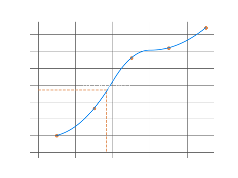

In writing this section I have had to consider many things; but primarily, that as a subject mathematics can get as deep as a person wants it too. Accordingly, with my own bias I have found that certain concepts warrant a deep theoretical exploration, whilist others can simply be touched upon. I have done my best to thread the basics of statistics here, without overlooking any one concept in a fashion that may constitute neglect. Where things have been overlooked, I have stated so briefly so as to allow the reader to explore the broader treatise on the subject as he/she desires.
Mode and Median
Consider the dataset:
\[0, 2, 3, 3, 3, 5, 6, 10, 2, 4, 3, 3, 5\]
The mode in any given dataset is the most frequently occuring value. In this case the most frequent value in the dataset is the number \(3\). Hence the mode of the dataset is 3.
The median in any given dataset is the middle number. Sorting our dataset in ascending order, we have: \[0, 2, 2, 3, 3, 3, 3, 3, 4, 5, 5, 6, 10\] The middle number in this dataset is \(3\). Hence, the median of the dataset is three.
Both the mode and median are measures of central tendency. Though it may not seem like it, the use of the mode and median in the real world is extremely important and is based very much on the type of data that a statistician may be working with.
The median in any given dataset is the middle number. Sorting our dataset in ascending order, we have: \[0, 2, 2, 3, 3, 3, 3, 3, 4, 5, 5, 6, 10\] The middle number in this dataset is \(3\). Hence, the median of the dataset is three.
Both the mode and median are measures of central tendency. Though it may not seem like it, the use of the mode and median in the real world is extremely important and is based very much on the type of data that a statistician may be working with.
Mean
For any given dataset, the arithmetic mean is the sum of all the datapoints, divided by the number of existing datapoints in the given dataset, i.e.
\[\bar x = \frac{\Sigma x}{n}\]
As shown above, the mean is denoted by the symbol \(\bar x\) for any dataset \(x_1, x_2, x_3, ... x_i\).
Hence, for a given dataset \((5, 10, 15, 20)\), the mean is given by:
\[\bar x = \frac{5 + 10 + 15 + 20}{4}\]
\[\bar x = 12.5\]
The mean is a measure of central tendency, much like the mode and the median, and can be more or less useful than the others in real life based on the nature of the data that you are working with. The circumstantial usefulness of the mean will be discussed later on in the section dealing with grouped and ungrouped data.
Frequency
Frequency is one of the more general ideas in statistics. It is a measurment for the number of occurences in a dataset that can be classified catergorically in a grouped or ungrouped manner. The complexity of working with frequencies increases as the data itself gets more complex. This will be illustrated as we proceed. Consider the following dataset:
In the first row we have various categories of Heights, ranging from 150cm to 154cm. In the second row, we have the number of children that fall into each of these categories, i.e. we have the frequency with which each of these Heights occur for the given sample of children. This data is simple enough. If we wanted to take the mean, we can do a standard calculation:
\[\bar x = \frac{\Sigma f_ix_i}{n}\]
\[\bar x = \frac{(150*5) + (151*8) + (152*15) + (153*3) + (154*6)}{5 + 8 + 15 + 3 + 6}\]
\[\bar x = \frac{5621}{37}\]
\[\bar x = 151.9189cm\]
However, things can very easily get more complex if we group the data differently. Consider the following dataset:
Instead of singular categories of heights, our data is now represented by intervals. The problem with this is readily apparent, in the fact that the precise meaning of our data is now lost somewhere in the intervals we have defined. If we wanted to take an average of heights, it would not be very easy to do so. I suppose, we could take the midpoints of each interval as a representation of the average freqency for each category, but for more complex datasets this simple numerical method is not going to be very accurate. But, we can try it anyways:
\[\bar x = \frac{\Sigma f_ix_i}{n}\]
\[\bar x = \frac{(150.5*5) + (151.5*8) + (152.5*15) + (153.5*3) + (154.5*6)}{5 + 8 + 15 + 3 + 6}\]
\[\bar x = \frac{5639.5}{37}\]
\[\bar x = 152.4189cm\]
A more acceptable method for finding the central tendency of data represented by complex intervals is to plot a cumulative frequency curve using linear interpolation, and estimate the median value based on the graph. When I say plot using linear interpolation, I am not speaking about actually performing a mathematical calculation - though, it most certainly is a real mathematical way of defining a curve based on a set of datapoints. However, the reader can explore this topic on his/her own time, as it is much more advanced than we can discuss here. If you were using graph paper, it would be reasonably acceptable to plot the points and average a curve by hand. To plot our graph I am simply going to rely on mathematical software to do the interpolation for me.
To plot the graph, we first have to define boundaries that are acceptable for our given intervals - this can be the lower interval boundaries, the upper interval boundaries, or the midpoints of the intervals as we have already taken. The reasoning for how we select the boundary is dependent on the nature of the data, and what the statistician himself is trying to accomplish. To keep things simple, we'll stick with the midpoints. We also have to calculate the cumulative frequency which is just some simple addition. Our datapoints for the graph are shown below:
Now that we have our values, we can plot our curve and estimate the median.
| Height (cm) | 150 | 151 | 152 | 153 | 154 |
|---|---|---|---|---|---|
| No. of Children | 5 | 8 | 15 | 3 | 6 |
| Height (cm) | 150-151 | 151-152 | 152-153 | 153-154 | 154-155 |
|---|---|---|---|---|---|
| No. of Children | 5 | 8 | 15 | 3 | 6 |
| midpoints (cm) | 150.5 | 151.5 | 152.5 | 153.5 | 154.5 |
|---|---|---|---|---|---|
| No. of Children | 5 | 8 | 15 | 3 | 6 |
To plot the graph, we first have to define boundaries that are acceptable for our given intervals - this can be the lower interval boundaries, the upper interval boundaries, or the midpoints of the intervals as we have already taken. The reasoning for how we select the boundary is dependent on the nature of the data, and what the statistician himself is trying to accomplish. To keep things simple, we'll stick with the midpoints. We also have to calculate the cumulative frequency which is just some simple addition. Our datapoints for the graph are shown below:
| midpoints (cm) | 150.5 | 151.5 | 152.5 | 153.5 | 154.5 |
|---|---|---|---|---|---|
| Cumulative Frequency | 5 | 13 | 28 | 31 | 37 |
We take the center of the frequencies, as representing the middle of the dataset and the corresponding \(x\) value gives us an estimated median for our dataset.
In this case, our estimated median is \[151.8333\] Earlier we discussed the varying usage of the mean, mode and median. When working with grouped data, a median estimate using a cumulative frequency curve is one of the best illustrations of why the mean is not (by default) the best measure of central tendency.
In this case, our estimated median is \[151.8333\] Earlier we discussed the varying usage of the mean, mode and median. When working with grouped data, a median estimate using a cumulative frequency curve is one of the best illustrations of why the mean is not (by default) the best measure of central tendency.

It is simply one of many different and useful statistical descriptors. In the real world, our data is going to take on many different forms, and it is the job of the researcher to understand how to work with any given dataset.
Histograms